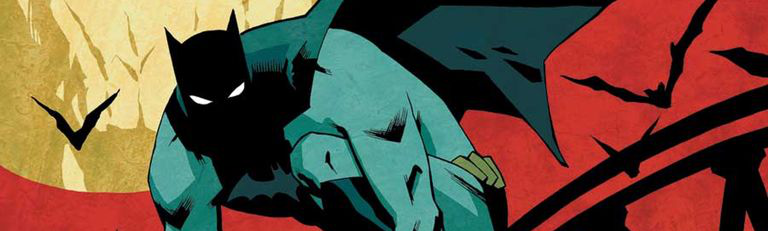

THE BATMAN
'The Batman' durante mucho tiempo fue el proyecto maldito de DC. Muchos criticaron el fichaje de Ben Affleck
como el Hombre Murciélago, pero tras ver 'Batman vs. Superman', las críticas se aplacaron ya que el actor
era de lo mejor de la película, algo que confirmó en 'Liga de la Justicia'. Su Batman más maduro, más mayor,
más experimentado y, por qué no decirlo, más cínico y más humano, era un soplo de aire fresco a la franquicia.
Tanto es así que, desde Warner y DC decidieron darle carta blanca para hacer con el personaje lo que quisiera.
Así que Ben Affleck se embarcó en un proyecto muy ambicioso: la película en solitario del superhéroe oscuro.
Se llamaría 'The Batman', y estaría protagonizada, escrita y dirigida por él. Pero los problemas llegaron pronto.
El guión no convencía a nadie, ni siquiera al propio Affleck, que no acababa de verlo claro. El proyecto se fue
retrasando y, poco a poco, Affleck se fue bajando del carro: primero de guionista, luego de director y, al final,
de actor. El nuevo Bruce Wayne será Robert Pattinson (fichaje que tuvo muchas críticas).